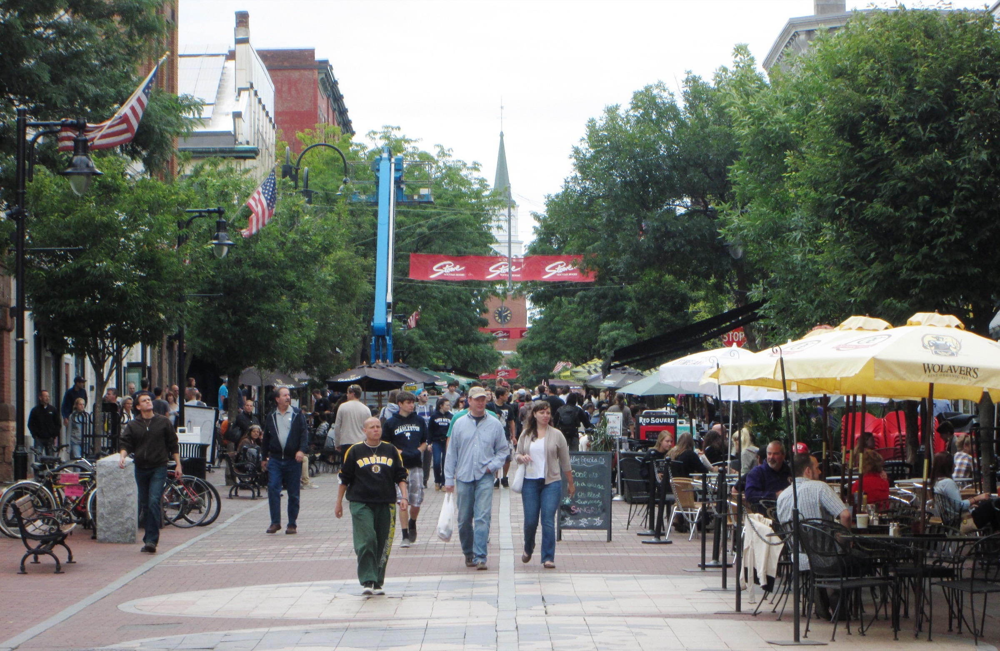

Audio Visual Services in Burlington, Vermont
Event Production in Burlington
Burlington is Vermont's cultural and economic hub—a vibrant lakeside city where tech startups share streets with farm-to-table restaurants, and where a University of Vermont keynote speaker might be followed by a waterfront wedding reception at sunset. The event landscape here is as dynamic as the city itself, and it demands AV production that can keep pace. That's where we come in.
The Lake Champlain waterfront is one of New England's most spectacular event settings, with the Adirondack Mountains rising across the water and Burlington's skyline glowing behind you. We've produced ceremonies and receptions along this waterfront where wind off the lake, ambient crowd noise from the boardwalk, and the logistics of outdoor power all had to be managed with care. Shelburne Farms, just south of the city, offers a different kind of grandeur—a 1,400-acre working farm with a historic inn and barn venues that host some of Vermont's most sought-after weddings and galas. The acoustic character of those barn spaces requires careful speaker placement and sound design, and we've refined our approach there over many events.
On the University of Vermont campus and along Church Street Marketplace, Burlington hosts a steady calendar of conferences, lectures, corporate retreats, and community celebrations. The city's growing technology sector brings national conferences to venues like the Hilton Burlington and the Davis Center, where presentation quality, breakout room audio, and live streaming capabilities are non-negotiable. Church Street dinners and downtown hotel conferences get the same cue discipline — scaled to the room, with travel from Manchester planned into the schedule.